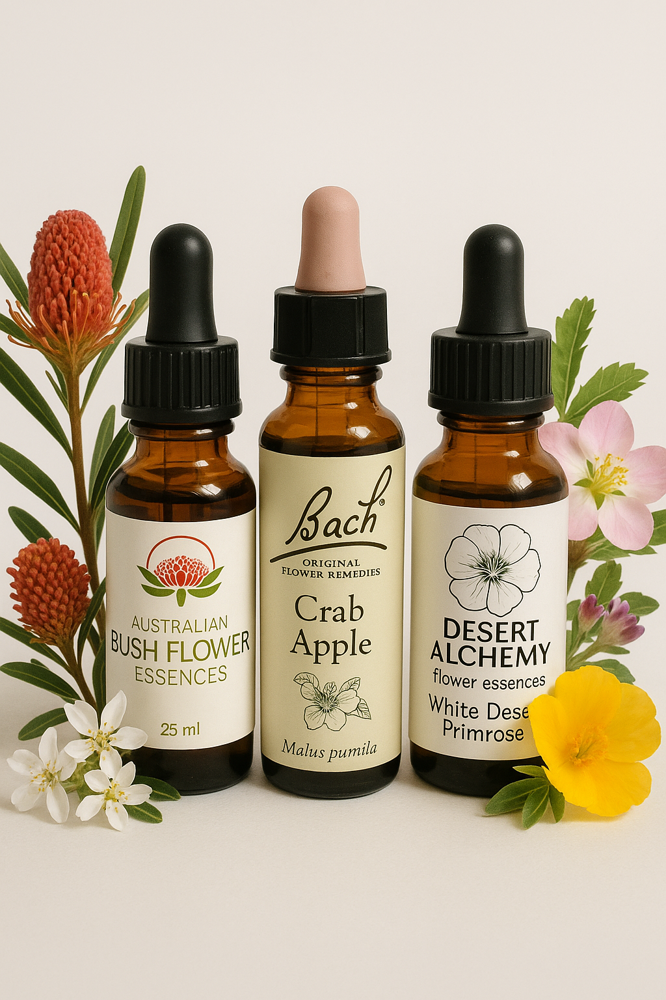

Nature's Medicine for Mind, Body & Spirit
Herbal Essences combine the ancient wisdom of plant medicine. I use Bach, Bush and Australian Desert essences to support your healing journey. These natural plant-based remedies work with your body's innate healing abilities.
Using carefully selected herbal tinctures, I create personalised herbal remedies to support your specific health and wellness goals. Each essence is chosen by your body through Kinesiology for its therapeutic properties and energetic qualities.
Whether you're seeking emotional balance, physical healing, spiritual clarity, or you simply want to enhance your overall wellbeing, herbal essences provide gentle yet powerful support from nature's pharmacy.

Includes assessment and custom blend creation
Includes personalised herbal blend to take home
Visit me at Forward Health, Currimundi or book a mobile service, Sunshine Coast
All equipment provided - you just need to relax
Mobile visits cost extra
Your herbal consultation is a personalised journey into natural healing and wellness support
Discussion of your health goals, current wellness, and any specific concerns
Kinesiology helps your body choose the perfect essences by accessing your innate awareness or subconscious healing ability
Creating your personalised herbal remedy using traditional methods
Clear instructions on how to use your herbal essences for maximum benefit
Book your herbal essences consultation and discover your personalised plant medicine
Call to Book Email Enquiry